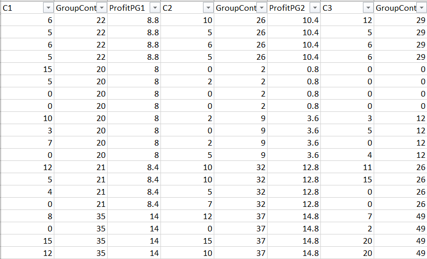
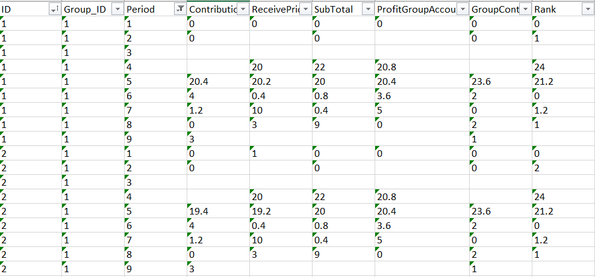

Data transformation is a recursive step that we will be doing along the way. But one particular essential transformation before moving to exploratory data analysis is pivoting the data into a long format instead of a wide one.
Source: Python and R Tips
Our PG game data is in a wide format.

We need it to be in a long format in order to be able to do proper analysis.

# Set the WD
setwd("D:/Work/BUE/R-Workshop-Day2.github.io")
# Load essential packages
library(openxlsx)
library(tidyverse)# Read the clean data from the previous step
new_data <- read.xlsx("Clean Data.xlsx",1)To reformat this dataset into long form, we will use the reshape function.
The arguments we provide include:
long_df <- reshape(new_data,
varying = c(
cont = names(new_data[,grep("C[0-9]",names(new_data))]),
pride = names(new_data[,grep("PrideTrt",names(new_data))]),
subt = names(new_data[,grep('SubTotal', names(new_data))]),
prft = names(new_data[,grep('ProfitPG', names(new_data))]),
grpcnt = names(new_data[,grep('GroupContribute', names(new_data))]),
rnk = names(new_data[,grep('Rank', names(new_data))])
),
v.names = c("Contribution","ReceivePride","SubTotal","ProfitGroupAccount","GroupContribution","Rank"),
timevar = "Period",
times = c("1", "2", "3", "4", "5", "6","7","8","9","10"),
direction = "long")# Take a look at the dataframe now
head(long_df,5)## Date Session Subject.ID Group Scenario1 Scenario2 Scenario3 Scenario4
## 1.1 43289 1 1 1 X Y Y X
## 2.1 43289 1 2 1 X X Y Y
## 3.1 43289 1 3 1 X Y X Y
## 4.1 43289 1 4 1 X Y X X
## 5.1 43289 1 5 2 Y Y X Y
## Scenario5 Scenario6 Scenario7 Scenario8 Treatment Gender Age Religion
## 1.1 Y Y Y Y Control Male 21 Muslim
## 2.1 Y Y Y Y Control Female 20 Muslim
## 3.1 X X Y Y Control Female 22 Christian
## 4.1 X X X X Control Female 20 Muslim
## 5.1 Y Y X X Control Female 23 Muslim
## Residence Profit FinancialStatus ID Group_ID Period Contribution
## 1.1 2 53.15 Medium 1 1 1 0
## 2.1 2 52.65 High 2 1 1 0
## 3.1 2 50.65 Medium 3 1 1 0
## 4.1 2 48.65 Medium 4 1 1 10
## 5.1 2 52.35 Medium 5 2 1 8
## ReceivePride SubTotal ProfitGroupAccount GroupContribution Rank id
## 1.1 0 0 0 0 0 1
## 2.1 1 0 0 0 0 2
## 3.1 0 2 5 0 0 3
## 4.1 0 0 4 5 0 4
## 5.1 0 2 1 4 4 5# Save long data in an excel file that can be used later
write.xlsx(long_df,"Long Data.xlsx")